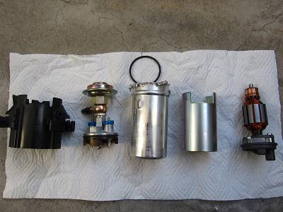
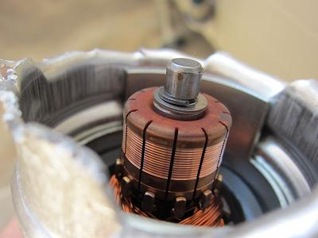
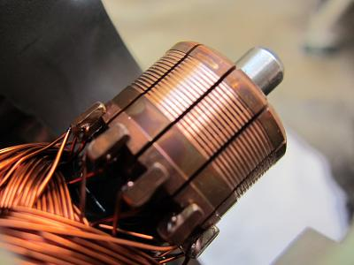
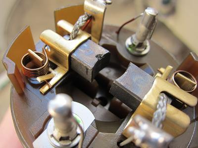
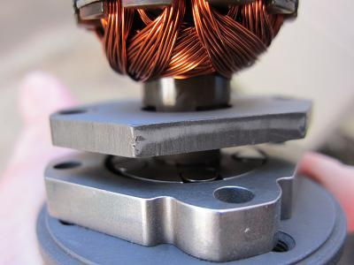
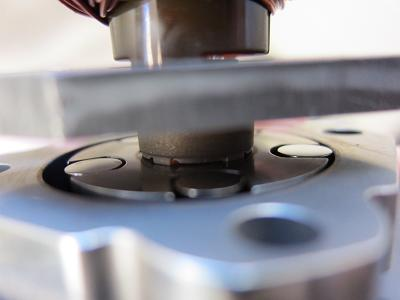

 取り外した燃料ポンプを分解した図 このような部品構成になっている。 アルミで出来た筒のカシメを開けばレギュレーターとブラシ部分が外れる。
|
   コミュテーターとブラシの拡大写真だ。 あまり消耗しているようには見られず、ブラシもまだ十分残っている。 12万キロも走行したようには見えない。 まだ交換しなくても良かったかも？ ちなみにこのポンプはＢＯＳＣＨのものだ。
|
 ガソリンを送り込むポンプ部分をバラしてみよう。 ここはトルクスネジ４本で止まっている。 こっちもあまり状態は悪くなさそうだ。 使用するガソリンの種類にもよるのだろうか？
|
 ここに上で見た「玉」が見える。 これがガソリンをかき上げてるようだ。 それなりに酷使してきたように思うが、10万キロくらいなら消耗具合としては大丈夫なことが分かった。 前回の交換時に燃料フィルターを同時に交換したのも良かったのかもしれない。 ガソリンはポンプの冷却も兼ねている。ガソリンが少ない状態で乗っていると、ポンプが熱を持ち傷めてしまいやすい。 できるだけガソリンは常に満タン、ポンプと同時にフィルターも交換するのが長く使う秘訣かもしれない。 Ｍゴローの経験だと、壊れる前に鳴ると言われるポンプの「ジー」といった音はあまり関係ないように思う。 壊れるときは音も無しに壊れる！ 分解したポンプ 欲しいひといますか？ ・・・いませんね（笑
|